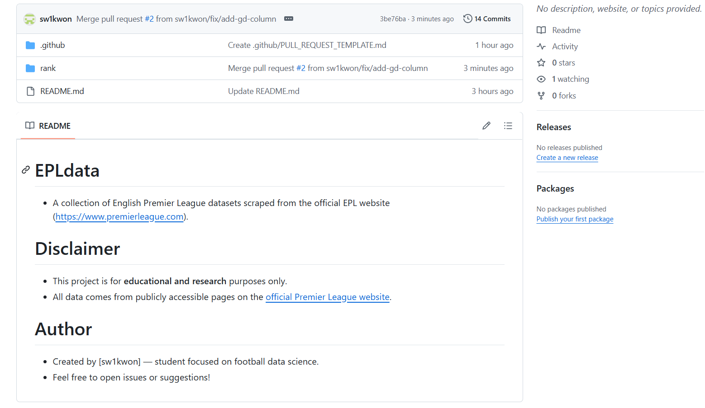

3. Apply Styles to Your Personal Webpage
Related content: https://sw1kwon.github.io/Capstone1Blog/posts/htmlmarkdown.html#css-basics-webpage-styling
- Files to Submit:
my_page_styled.html,styles.css
- Required Elements:
- Use
background-colorandcolorproperties to set background and text colors - Use
padding,margin, andborderproperties to style content boxes - Use
text-alignto center-align the title
- Use
- Optional Challenge Tasks:
- Add styles to a
button(e.g., usingbackground-color,border-radius)
- Apply a
hovereffect to change the button style on mouseover
- Add styles to a
Practice
5. Create an RMarkdown File
Related content: https://sw1kwon.github.io/Capstone1Blog/posts/htmlmarkdown.html#markdown-basics
Related content: https://sw1kwon.github.io/Capstone1Blog/posts/htmlmarkdown.html#introduction-to-rmarkdown
- File to Submit:
my_analysis.Rmd
- Required Content:
- A title header and a short self-introduction
- A list of R packages you use (use
uloroltags) - An R code chunk that runs
summary(iris) - Knit the file into an HTML or PDF output
- Optional Challenge Tasks:
- Run
plot(iris)to include a graph
- Use
date: "2025-02-06"to automatically insert the date
- Run
Practice
6. Extend Your RMarkdown Document
Related content: https://sw1kwon.github.io/Capstone1Blog/posts/htmlmarkdown.html#using-markdown-rmarkdown-tables-code-blocks-math
- File to Submit:
my_analysis2.Rmd
- Assignment Requirements:
- Use Markdown syntax to summarize data in a table (using
|---|format) - Add the mean formula using LaTeX notation
- Use
ggplot2to insert a scatter plot (withgeom_point()) - Print a data table using
kable() - Knit the document into an HTML or PDF and review the output
- Use Markdown syntax to summarize data in a table (using
- Optional Challenge Tasks:
- Add a histogram using
geom_histogram()
- Use
group_by()andsummarise()to organize group-wise statistics
- Add a histogram using
Practice
7. Create a Dashboard and Convert Document Formats
Related content: https://sw1kwon.github.io/Capstone1Blog/posts/htmlmarkdown.html#advanced-use-of-rmarkdown
- File to Submit:
my_dashboard.Rmd
- Assignment Requirements:
- Use flexdashboard to create a dashboard with two visualization panels
- Panel 1: A plot created with ggplot2
- Panel 2: A data table generated using
DT::datatable()
- Convert the RMarkdown file into HTML, PDF, and Word formats
- Compare the output across the three formats
- Use flexdashboard to create a dashboard with two visualization panels
- Optional Challenge Tasks:
- Add interactive user input with shiny to dynamically change the data
- Use
plotly::ggplotly()to make the graph interactive
- Add interactive user input with shiny to dynamically change the data
Practice
8. Write a Final Analysis Report
Related content: https://sw1kwon.github.io/Capstone1Blog/posts/htmlmarkdown.html#writing-practical-reports-automating-analysis-with-rmarkdown
- File to Submit:
final_report.Rmd
- Assignment Requirements:
- Use a dataset of your personal interest to create a complete RMarkdown report
- Implement parameterized reporting (params) to allow reuse with other datasets
- Knit and submit the output in both HTML and PDF formats
- Optional Challenge Tasks:
- Use Shiny to add interactive input features
- Combine the report with a dashboard using Flexdashboard
- Use Shiny to add interactive input features
Practice
9. Use Markdown on GitHub
Related content: https://sw1kwon.github.io/Capstone1Blog/posts/htmlmarkdown.html#using-markdown-on-github
- File or Link to Submit:
- GitHub repository URL (with a
README.mdfile)
- URLs for Issue and Pull Request
- GitHub repository URL (with a
- Assignment Requirements:
- Write a
README.mdfile in your GitHub repository including:- Project overview
- Installation instructions
- Usage examples
- Project overview
- Create an Issue on GitHub and describe it using Markdown formatting
- Create a Pull Request and write a Markdown-formatted message with:
- Summary of changes
- Checklist of tasks
- Summary of changes
- Write a
- Optional Challenge Tasks:
- Create an Issue template under
.github/ISSUE_TEMPLATE/
- Add a Pull Request template using
.github/PULL_REQUEST_TEMPLATE.md
- Create an Issue template under
Practice
GitHub repository URL (with a README.md file)
https://github.com/sw1kwon/EPLdata

Create an Issue template under .github/ISSUE_TEMPLATE/
Add a Pull Request template using .github/PULL_REQUEST_TEMPLATE.md
Write a README.md file in your GitHub repository including:
# rank
Each file contains season-specific standings, separated into:
## Data Coverage
- Seasons: 1992–93 (`9293`) to 2023–24 (`2324`)
- Match Type:
- `All` (overall matches)
- `Home` (home performance only)
- `Away` (away performance only)
## Repository Structure
```
/rank/
├── rank_9293All.csv
├── rank_9293Home.csv
├── rank_9293Away.csv
├── ...
└── rank_2324All.csv
```
# season_dashboard.Rmd
## EPL Dashboard Overview
This dashboard, written in R using **RMarkdown + Flexdashboard + Plotly**, provides a visual summary of EPL standings for a given season and match type (All / Home / Away).
## How It Works
- CSV data is loaded directly from GitHub using the `params$season` and `params$type` values.
## Dashboard Layout
The dashboard consists of two columns:
### Left Column: Full Standings Table
- Displays the full league table using `DT::datatable()`
- Supports pagination and horizontal scroll for better viewing
### Right Column: Visual Analytics
#### 1. **Top 5 Teams by Points**
- Bar chart showing the top 5 teams
- Each bar includes a tooltip with:
- Win / Draw / Loss record
- GF, GA, GD values
- Points are labeled outside the bar
#### 2. **Points vs Goal Difference**
- Scatter plot comparing `Points` vs `GD` for all teams
- Color gradient represents `Pos` (position):
- `darkorange` for higher rank (lower number)
- `skyblue` for lower rank (higher number)
- Interactive tooltips show team names and key stats
## Parameters Used
```yaml
params:
season: "2223"
type: "All"
```season_dashboard.Rmd
---
title: "EPL Season Report"
author: "Soonwon KWON"
date: "`r Sys.Date()`"
output:
flexdashboard::flex_dashboard:
orientation: columns
vertical_layout: scroll
theme: flatly
params:
season: "9293"
type: "All" # All, Home, Away
---
```{r setup, include=FALSE}
library(tidyverse)
library(DT)
base_url <- "https://raw.githubusercontent.com/sw1kwon/EPLdata/refs/heads/main/rank/"
csv_file <- paste0("rank_", params$season, params$type, ".csv")
full_url <- paste0(base_url, csv_file)
df <- read.csv(full_url)
str(df)
```
### Column {data-width=500}
-----------------------------------------------------------------------
### üèÜ Full Standings Table
```{r}
datatable(df, options = list(pageLength = 10, scrollX = TRUE))
```
---
### Column {data-width=500}
-----------------------------------------------------------------------
### üîù Top 5 Teams by Points
```{r}
library(plotly)
top_n <- df %>%
arrange(desc(Points)) %>%
slice_head(n = 5)
p1 <- ggplot(top_n, aes(x = reorder(Team, Points), y = Points,
fill = Team,
text = paste0(
"Won: ", Won, ", Drawn: ", Drawn, ", Lost: ", Lost, "<br>",
"GF: ", GF, ", GA: ", GA, "<br>",
"GD: ", GD
))) +
geom_col(show.legend = FALSE) +
geom_text(aes(label = Points), hjust = -0.2, size = 4) +
coord_flip() +
labs(title = paste("Top 5 Teams -", params$season, params$type),
x = "Team", y = "Points") +
theme_minimal() +
theme(legend.position = "none")
ggplotly(p1, tooltip = "text")
```
---
### ⚽ Points vs Goal Difference
```{r}
p2 <- ggplot(df, aes(x = GD, y = Points,
color = Pos,
text = paste0(
"Team: ", Team, "<br>",
"Pos: ", Pos, " | Points: ", Points, "<br>",
"GF: ", GF, ", GA: ", GA, " | GD: ", GD
))) +
geom_point(size = 3) +
scale_color_gradient(low = "darkorange", high = "skyblue") +
labs(
title = paste("Performance Overview -", params$season, params$type),
x = "Goal Difference (GD)", y = "Points (Pts)"
) +
theme_minimal()
ggplotly(p2, tooltip = "text")
```Create an Issue on GitHub and describe it using Markdown formatting
Create a Pull Request and write a Markdown-formatted message
Data Notes
At the time, I was working on a database project. During the crawling and preprocessing phase, I intentionally removed the GD (Goal Difference) column, since it could be calculated using
GF - GA.However, I chose to keep the Points column because in some cases, the points did not follow the standard formula
3 × Won + 1 × Drawn + 0 × Lost, due to point deductions from disciplinary sanctions.
Important Notes
- At the bottom of the edit page, select “Create a new branch for this commit and start a pull request”
- Suggested branch name:
fix/add-gd-column - Make sure to include the line
Fixes #1in the pull request description (replace1with your actual issue number) - GitHub does not distinguish letter case:
fixes,Fixes, andFIXESare all valid - The issue will only be automatically closed after the pull request is merged into the
mainbranch
Edit a README.md file
- Add the following sentence
- If the dataset does not contain the
GD(Goal Difference) column, it is automatically calculated asGF - GA.
- If the dataset does not contain the
# rank
Each file contains season-specific standings, separated into:
## Data Coverage
- Seasons: 1992–93 (`9293`) to 2023–24 (`2324`)
- Match Type:
- `All` (overall matches)
- `Home` (home performance only)
- `Away` (away performance only)
## Repository Structure
```
/rank/
├── rank_9293All.csv
├── rank_9293Home.csv
├── rank_9293Away.csv
├── ...
└── rank_2324All.csv
```
# season_dashboard.Rmd
## EPL Dashboard Overview
This dashboard, written in R using **RMarkdown + Flexdashboard + Plotly**, provides a visual summary of EPL standings for a given season and match type (All / Home / Away).
## How It Works
- CSV data is loaded directly from GitHub using the `params$season` and `params$type` values.
- If the dataset does not contain the `GD` (Goal Difference) column, it is automatically calculated as `GF - GA`.
## Dashboard Layout
The dashboard consists of two columns:
### Left Column: Full Standings Table
- Displays the full league table using `DT::datatable()`
- Supports pagination and horizontal scroll for better viewing
### Right Column: Visual Analytics
#### 1. **Top 5 Teams by Points**
- Bar chart showing the top 5 teams
- Each bar includes a tooltip with:
- Win / Draw / Loss record
- GF, GA, GD values
- Points are labeled outside the bar
#### 2. **Points vs Goal Difference**
- Scatter plot comparing `Points` vs `GD` for all teams
- Color gradient represents `Pos` (position):
- `darkorange` for higher rank (lower number)
- `skyblue` for lower rank (higher number)
- Interactive tooltips show team names and key stats
## Parameters Used
```yaml
params:
season: "2223"
type: "All"
```Modified Dashboard Example
https://sw1kwon.github.io/assets/html/final_report.html
---
title: "EPL Season Report"
author: "Soonwon KWON"
date: "`r Sys.Date()`"
output:
flexdashboard::flex_dashboard:
orientation: columns
vertical_layout: scroll
theme: flatly
params:
season: "9293"
type: "All" # All, Home, Away
---
```{r setup, include=FALSE}
library(tidyverse)
library(DT)
base_url <- "https://raw.githubusercontent.com/sw1kwon/EPLdata/refs/heads/main/rank/"
csv_file <- paste0("rank_", params$season, params$type, ".csv")
full_url <- paste0(base_url, csv_file)
df <- read.csv(full_url)
# GD (Goal Difference)
if (!"GD" %in% names(df) & all(c("GF", "GA") %in% names(df))) {
df <- df %>% mutate(GD = GF - GA)
}
str(df)
```
### Column {data-width=500}
-----------------------------------------------------------------------
### üèÜ Full Standings Table
```{r}
datatable(df, options = list(pageLength = 10, scrollX = TRUE))
```
---
### Column {data-width=500}
-----------------------------------------------------------------------
### üîù Top 5 Teams by Points
```{r}
library(plotly)
top_n <- df %>%
arrange(desc(Points)) %>%
slice_head(n = 5)
p1 <- ggplot(top_n, aes(x = reorder(Team, Points), y = Points,
fill = Team,
text = paste0(
"Won: ", Won, ", Drawn: ", Drawn, ", Lost: ", Lost, "<br>",
"GF: ", GF, ", GA: ", GA, "<br>",
"GD: ", GD
))) +
geom_col(show.legend = FALSE) +
geom_text(aes(label = Points), hjust = -0.2, size = 4) +
coord_flip() +
labs(title = paste("Top 5 Teams -", params$season, params$type),
x = "Team", y = "Points") +
theme_minimal() +
theme(legend.position = "none")
ggplotly(p1, tooltip = "text")
```
---
### ⚽ Points vs Goal Difference
```{r}
p2 <- ggplot(df, aes(x = GD, y = Points,
color = Pos,
text = paste0(
"Team: ", Team, "<br>",
"Pos: ", Pos, " | Points: ", Points, "<br>",
"GF: ", GF, ", GA: ", GA, " | GD: ", GD
))) +
geom_point(size = 3) +
scale_color_gradient(low = "darkorange", high = "skyblue") +
labs(
title = paste("Performance Overview -", params$season, params$type),
x = "Goal Difference (GD)", y = "Points (Pts)"
) +
theme_minimal()
ggplotly(p2, tooltip = "text")
```